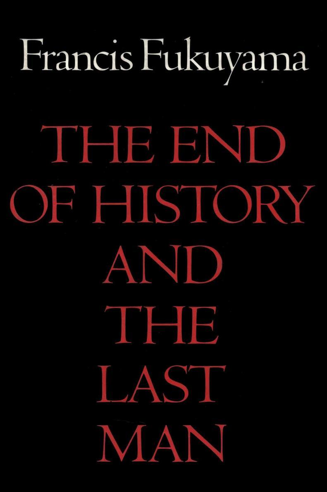
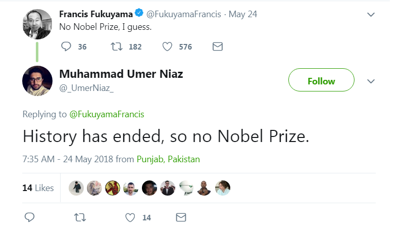
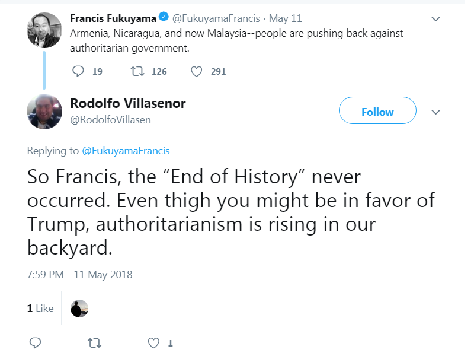
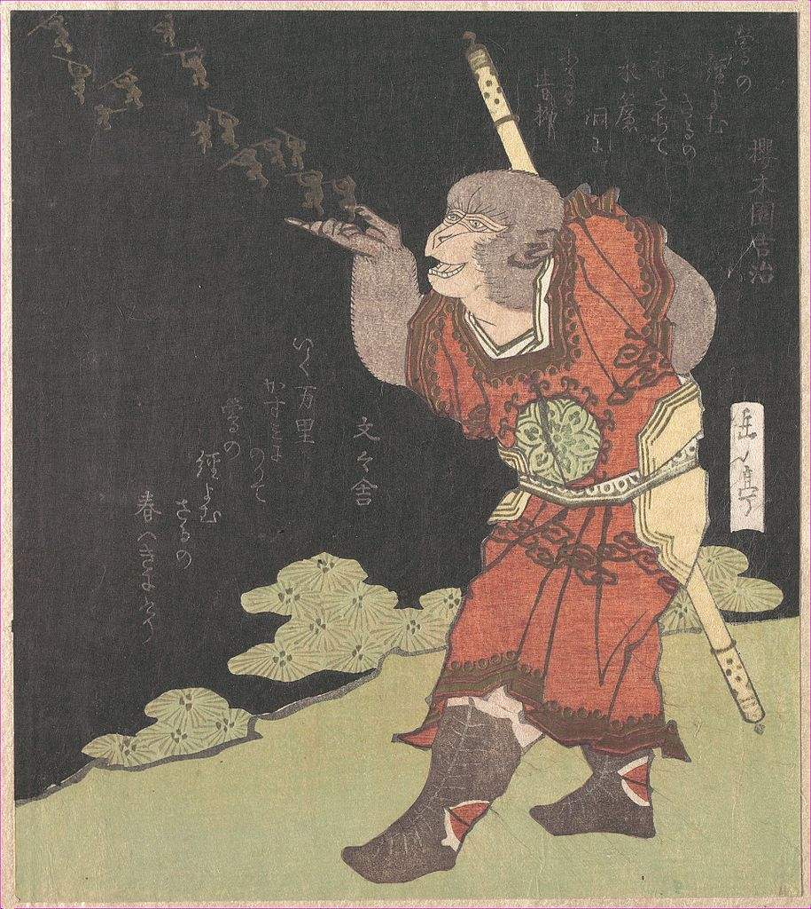

"It's only when a man tames his own demons that he becomes the king of himself if not of the world." - Joseph Campbell
Quick! What's the first thing you think of when you read the words "Francis Fukuyama"?
Here's my guess:
Now, maybe you thought of something else, but a majority of people associate Fukuyama with this famous 1992 book. Written at the end of the Cold War, Fukuyama declared in The End of History that Western liberal democracy had won the contest of ideologies, and was the final form of human government that all countries would soon reach. Embarrassingly for him, the world turned out very differently than he expected, as liberal ideals corroded and authoritarianism returned.
It's been a quarter century since it was written, and people still remember The End of History:
 After his blockbuster was celebrated, "the young Francis Fukuyama, then a deputy director of the U.S. State Department's Policy Planning Staff, quickly emerged as a minor celebrity, replete with a position at the RAND corporation and a generous book contract allowing him to expand on his ideas."[1]
So far this is unremarkable; an academic comes out swinging with a big idea, rapidly gains prestige and receives some perks. The academic is eventually shown to be spectacularly wrong, but continues plodding on because he can maintain a comfortable lifestyle and enjoy high status amongst his peers. Then why do I rate Fukuyama so highly, and what does it have to do with one of the greatest stories from Chinese literature?
Journey to the West
A hero, according to one definition, is someone who combats adversity through feats of bravery, often for the sake of honor. A classic example of a hero from Chinese literature is Sun Wukong, the Monkey King, in the novel Journey to the West, one of the Four Great Classical Novels of Chinese literature. Here's an overly brief summary of the 100-chapter Journey to the West:
Sun Wukong, the Monkey King, was born from a magic stone, and learns magic, combat, and the secrets of immortality. He accumulates more and more abilities and personal power, until it goes to his head. This leads him to rebel against Heaven, and he almost overturns the Celestial order after single-handedly defeating the Army of Heaven. He is finally stopped by the Buddha, who imprisons him under a rock.
To atone for his sins, Sun Wukong agrees to escort a Buddhist monk on his pilgrimage. They encounter a total of eighty-one trials and tribulations before reaching their destination. Along the way, Sun Wukong gradually learns about virtue and the teachings of Buddhism. When they finally reach their destination, Sun Wukong is granted Buddhahood, becoming the "Victorious Fighting Buddha".
Sun Wukong succumbs to the hubris of thinking he can single-handedly overthrow heaven, undergoes the ordeal of the Journey to the West, and finally redeems himself through Buddhahood. But how does this relate to Francis Fukuyama?
Hubris
The story starts with the publication of The End of History, which establishes Fukuyama's intellectual firepower. Hubris is on full display as Fukuyama confidently predicts the continued and everlasting domination of the liberal democratic order.[2]
The fame and widespread popularity of the book gives Fukuyama the opportunity to become a leading neoconservative intellectual, as an active member of the Project for the New American Century think tank. This think tank produces core members of President George W. Bush's administration, including Dick Cheney, Donald Rumsfeld, and Paul Wolfowitz. Fukuyama accumulates influence and prestige in his new role as high priest of the neoconservatives.
Things are looking up for Fukuyama, but disaster looms on the horizon…
Ordeal
Propelled by the triumphalism of the End of History, the George W. Bush administration wants to invade Iraq. As the leading neoconservative intellectual who provided the academic theory for the invasion, we'd expect Fukuyama to support this.
But that's not how Fukuyama sees things. He thinks the Iraq War will be a disaster, because it overestimates U.S. power and ability to control global events. Fukuyama blanches at the idea of a huge reconstruction project in a large country without any long-term plan. What does he do – does he support his neoconservative team even though he privately harbors doubts, or does he stay silent, letting them down by not lending his legitimacy to the war?
What Fukuyama chooses to do is breathtaking. He puts everything he has on the line, and speaks out against the invasion, actively opposing it, calling for the resignation of fellow think tanker Donald Rumsfeld! For someone in his position, this is unprecedented.[3] Academics value their prestige, and tend to double down when the theories that they have spent years working on are challenged. Fukuyama's action here is incredible.
For his troubles, the neoconservatives eject Fukuyama from their circles, and he loses his influence, status, prestige, speaking tours, book deals, and more. He retreats to Johns Hopkins University and distances himself from the erstwhile allies who gave him so much. He endures two decades in the cold, yet his disavowal of the neoconservatives does not spare him from criticism for being the "End of History guy".
Fukuyama stands firm and refuses to yield. He spends his time reflecting on his research, the gaps in his knowledge, and his integrated view of the world. Driven by the sting of his inaccurate prediction, he reads so much and so widely that his head triples in size in order to contain his massive new brain.[4]
Redemption
The result of this ascetic dedication is a two volume masterpiece: The Origins of Political Order and Political Order and Political Decay. This is a comparative history book that presents a modest political science thesis, supported by a clear narrative and voluminous research. Upon its release, it is widely acclaimed, with many reviewers noting the evolution of Fukuyama's views and the powerful yet disciplined narrative.
Mark Manson's review describes it well:
Fukuyama's desire with these books is to answer two big questions: 1) How and why did governmental systems develop across the world? 2) Why did some governmental systems become more functional and just than others?
To construct his argument, Fukuyama literally traces the evolution of all of the world's major civilizations: Chinese, Indian, Middle Eastern, European, and the New World up to present day. The first book follows world history up until the French Revolution and analyzes the differences between the pre-modern state systems in each major civilization and why they developed in the direction that they did.
Book two then starts with the French and American Revolutions (the invention of modern democracy, basically) and looks at why western nation/state systems have come to dominate the planet, why North America, Australia, and much of Asia have caught up with the West in terms of development, education and economics, and why other regions of the world such as Latin America, Africa, and the Middle East struggle in their own unique cultural ways.
As someone who has traveled the world many times over and wondered things like, "Why are Latin countries so corrupt?" or "Why is there very little violent crime in Asia despite large amounts of poverty?" or "Why do democratic movements never take root in the Middle East even though it's clear the majority of people there support them?" this book provided mind-blowing answer after mind-blowing answer.
Fukuyama has matured and evolved. He no longer makes authoritative declarations about the world, and doesn't give confident predictions about the future. He merely states that government is a difficult problem with no easy solutions, and we should have moderate expectations for what we can achieve.[5] Sun Wukong learns about virtue and becomes the Victorious Fighting Buddha; Fukuyama emerges from the wilderness and reclaims his place as a respected public intellectual.
Future
For most people, reaching a position of power and influence is the end of the journey, as it validates them and legitimizes their ideas. How rare and heroic it is for someone to repudiate their status and leave their powerful position in the search for truth and excellence! The few with the bravery to do so must be exalted, not forever tainted by their early blunders.
In a world where all things are recorded, the past weighs heavily on us all. So we must gladly suffer the naïve and reckless acts of someone who willingly sets out on this journey, because discovery and enlightenment requires a transformation from a flawed person to a hero.
Perhaps one day we, too, shall possess the courage to accept our past sins and make an all-out effort to redeem ourselves with a great work that future generations will admire. Few of us bear past burdens as heavy as Fukuyama's, but none of us can escape the ordeal. When the time of suffering and redemption comes, we'll hope that others judge us based on our finest accomplishments, not what we used to be.
[1] https://www.newcriterion.com/issues/1992/2/francis-fukuyama-and-the-end-of-history
[2] Factually speaking, Fukuyama was always opposed to The End of History being seen as a triumphalist victory parade for liberal democracy. But by accepting the position as the intellectual father of the neoconservative movement, he was seen by the public as an implicitly endorsing this reading of the book.
[3] A summary of his broadside is here: https://www.opendemocracy.net/democracy-election2004/article_2190.jsp
[4] I don't think this is literally true, but you never know.
[5] Amusingly, Fukuyama will still be forever known to the public as the "End of History guy." Even his Wikipedia page starts by saying "Fukuyama is known for his book The End of History and the Last Man."